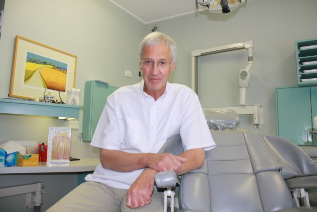
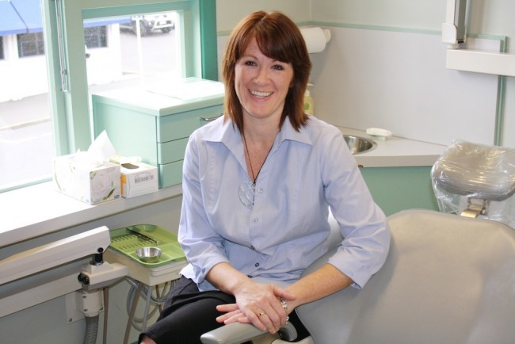
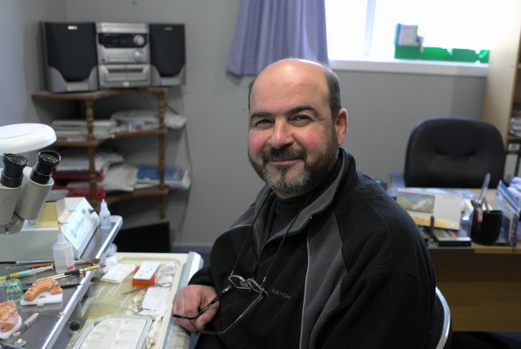
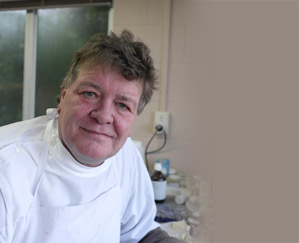

Our Team
Dr David Laing BDS, MSc
Principal Dental Surgeon
David undertook basic dental training at University of Otago School of Dentistry, graduating in 1972 with a Bachelor of Dental Surgery with Distinction. On the way through he received several awards for excellence and many subject prizes.
He then trained for a year under the auspices of one of New Zealand’s leading Oral Surgeons in a joint University of Otago / Dunedin Hospital appointment carrying out maxillofacial and dental trauma work.
In 1975 he obtained a place at the prestigious Eastman Institute of Dental Surgery in London (now part of University College, London), on the much sought-after Masters Conservative Dentistry programme, resulting in the qualification of Master of Science in Conservative Dentistry.
Then followed several years in private practice in the UK – nine years running his own successful practice in Sussex before returning in 1990 to Dunedin where two practices were combined to form the present day York Place Dental Limited.
David’s experience is wide-ranging over all aspects of conservative dentistry (the ‘nuts and bolts’) as well as basic and advanced cosmetic procedures, crowns and bridges, endodontics (root fillings), oral surgery (extractions including wisdom teeth) and prosthetic dentistry (artificial teeth).

Dr Bridget Heer BDS
Dental Surgeon
Bridget qualified with her Bachelor of Dental Surgery degree with Credit from the University of Otago School of Dentistry in 1997 collecting subject prizes on the way.
She joined York Place Dental in 1999 taking a three year ‘sabbatical’ on Waiheke Island in 2002 to further her experience.
Bridget’s experience covers all aspects of contemporary dentistry including ‘lifestyle’ options such as tooth whitening.
Ghassan Dohan Ceramic Technician and Richard Blue Prosthetic Technician


Well respected experts in their respective fields, Richard and Ghassan are the technical gurus behind the superb dentures, crowns , bridges and other Laboratory-produced services which are provided for York Place Dental patients.
Highly trained and enthusiastic, just like us, Richard and Ghassan collaborate with the dentists at York Place Dental to achieve the best state-of-the-art outcomes.
The dentists and technicians, together with the support staff, are a formidable team with vast experience to tap into.